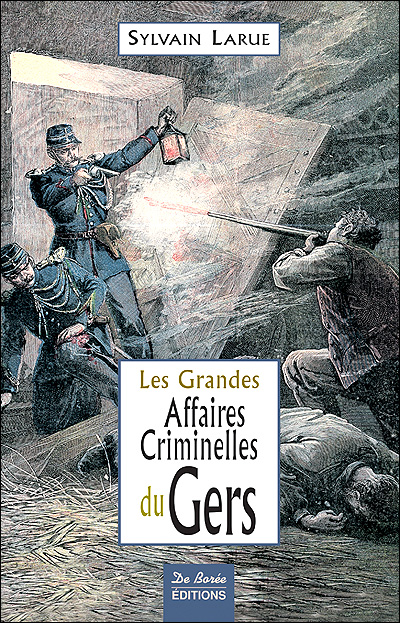
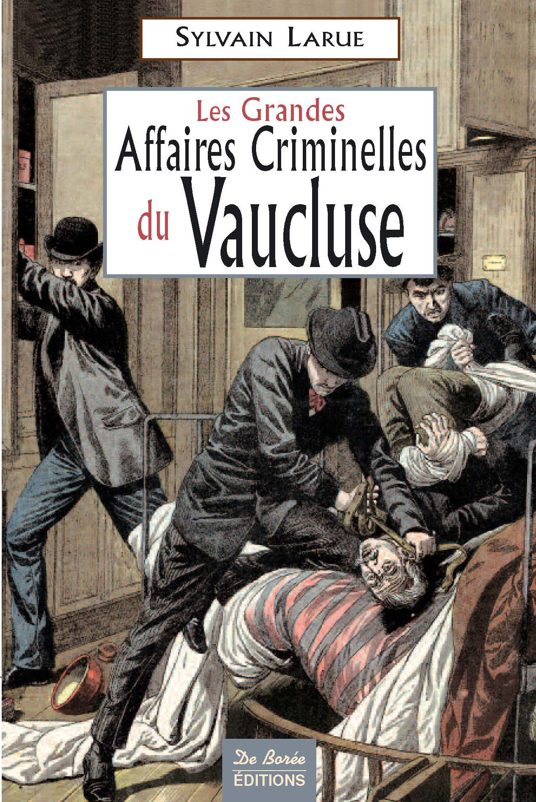
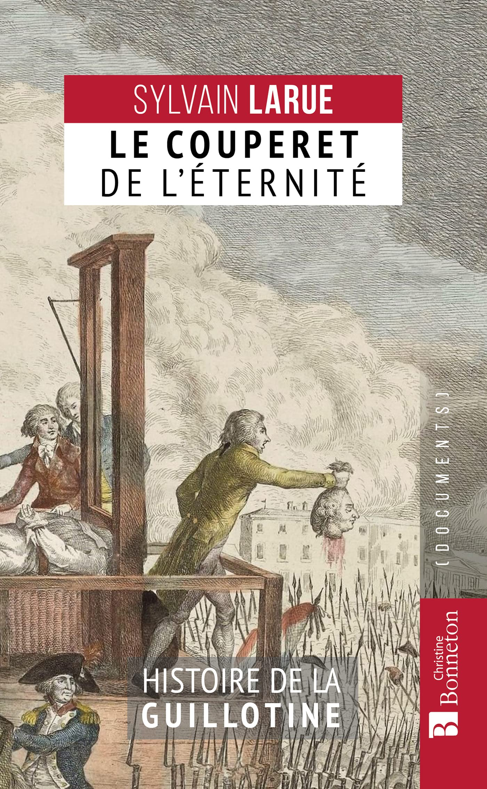
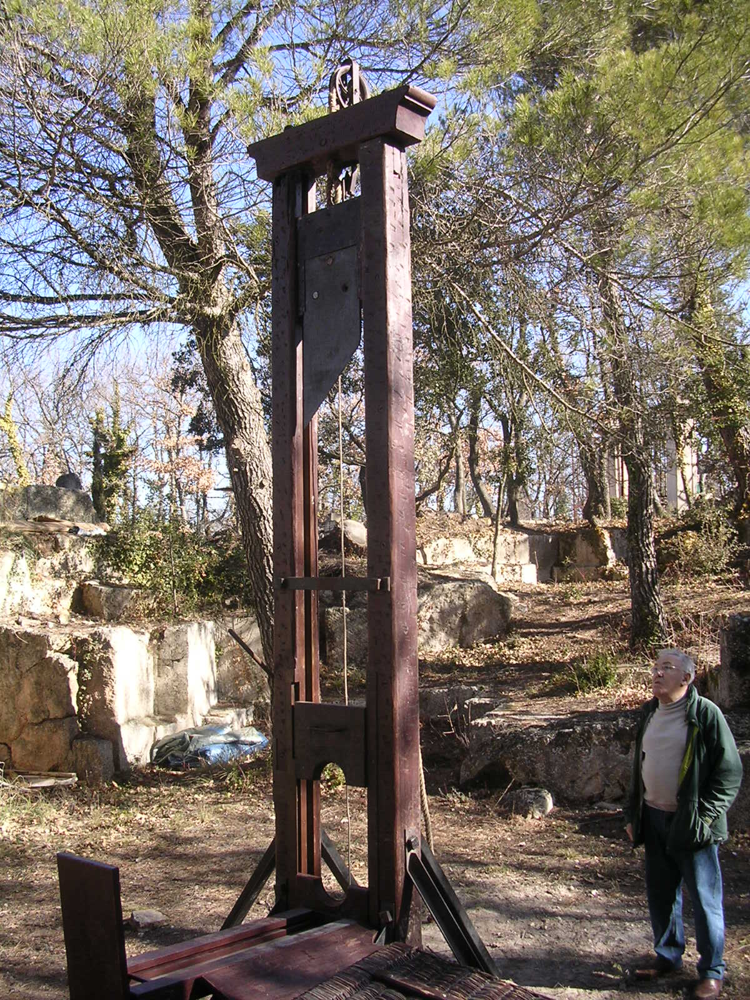
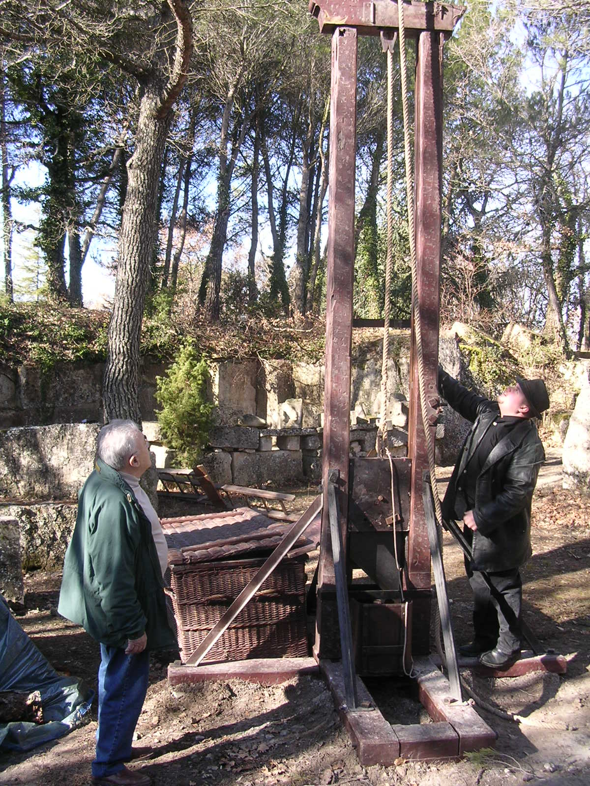
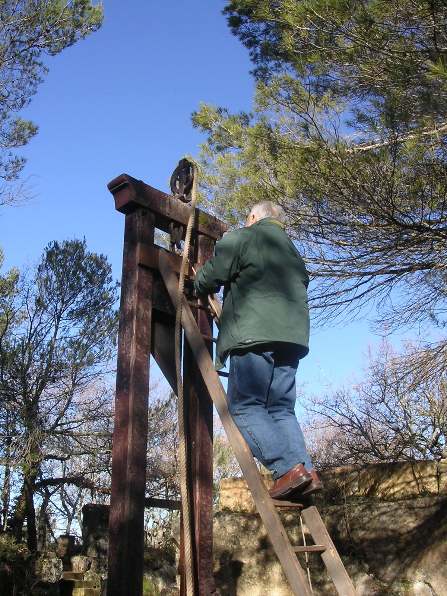
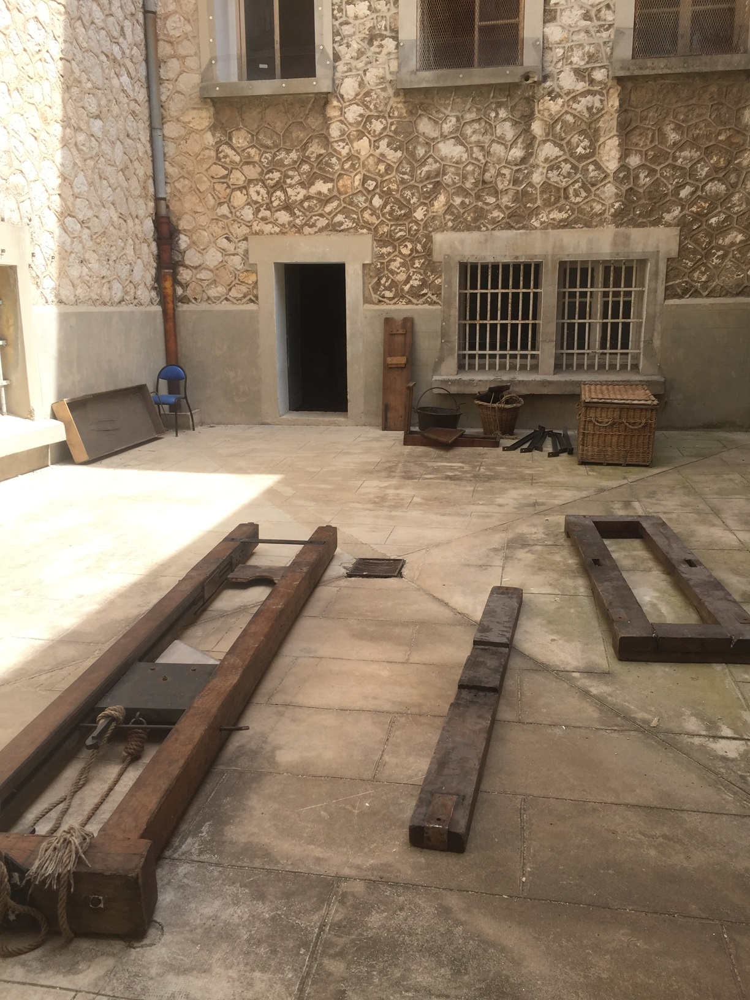
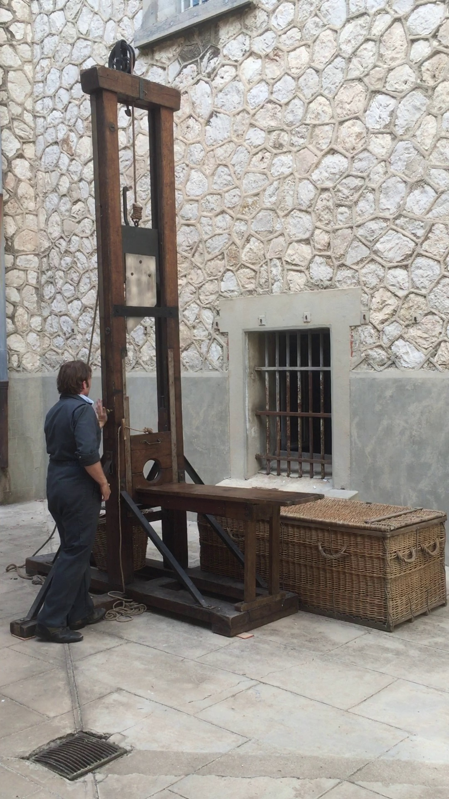
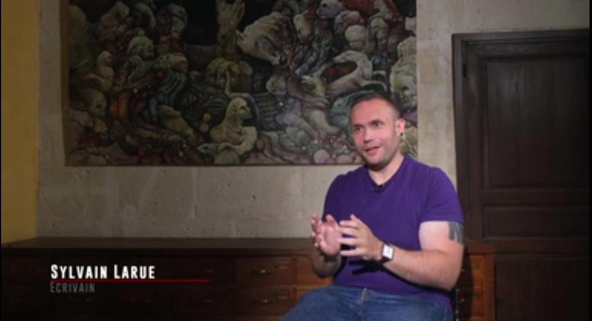
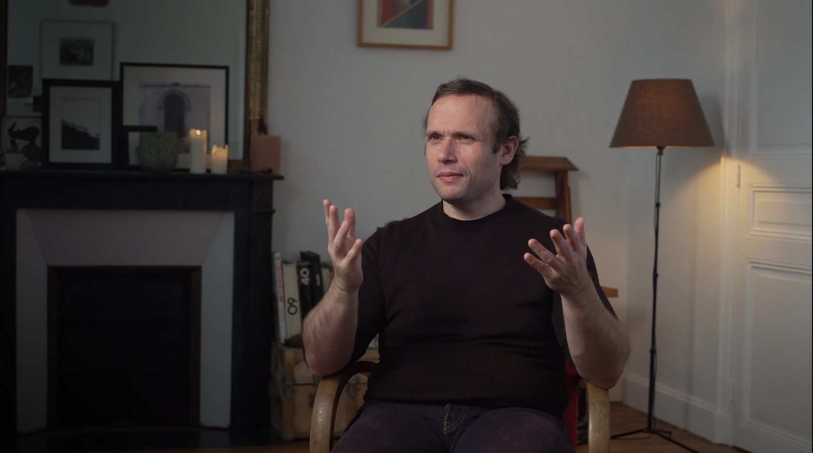

SYLVAIN LARUE

Nourri de récits et d'informations glanés peu à peu au sein de ma famille, notamment auprès de mon grand-père paternel, j'ai poursuivi mes recherches historiques par petites touches, d'abord en faisant un premier exposé sur le sujet en classe de seconde, passant définitivement pour un malade mental auprès de mes camarades.
C'est à partir de l'automne 2001 que ces recherches ont pris un tour professionnel, en partant de la consultation régulière de la presse ancienne afin de créer une liste - la plus complète possible - des exécutions capitales survenues en France. C'est à la même période, au printemps 2002 que, partant de cours de formation élémentaire au langage HTML suivis à l'université, j'ai créé la première version du site "De l'art de bien couper" que vous êtes actuellement en train de consulter, avant de l'héberger parmi les pages perso de Voila.fr. Quatre ans plus tard, je fondais également le forum Guillotine, permettant la rencontre improbable entre historiens et curieux venus du monde entier, dans une harmonie quasi permanente malgré le caractère hautement polémique du sujet qui nous rassemblait.
Intéressé notamment par les condamnations à mort survenues dans mon département natal, j'ai commencé simultanément à entreprendre des recherches encore plus assidues à ce sujet, puis à rédiger mon tout premier récit de faits divers, consacré au dernier guillotiné en public du Gers. Une fois ce texte d'une trentaine de pages achevé, je me suis pris au jeu, et j'ai écrit une vingtaine d'autres histoires. Un contact auprès d'un auteur, Jean-Michel Cosson, à l'origine de déjà deux livres similaires dans le département de l'Aveyron, m'a permis d'être présenté au monde de l'édition, via la maison De Borée (désormais Centre-France-Livres) et de connaître le bonheur de voir publié, quelques jours avant mon 22e anniversaire, mon premier recueil baptisé "Les Grandes Affaires Criminelles du Gers".



 Dès lors, jusqu'en 2011, dix-sept autres volumes devaient suivre. la majorité traitant de crimes département par département, certains co-écrits, d'autres étant des catalogues nationaux où j'ai occupé à la fois le statut d'auteur de la moitié des textes présentés et celui de sélectionneur de textes, extraits d'autres livres de la collection "Les Grandes Affaires Criminelles". Sans être uniquement composé de récits se soldant par une exécution capitale, il faut reconnaître que beaucoup des histoires contenues dans ces livres sont nées de mes recherches "patibulaires" et de la liste sans cesse mise à jour des condamnations à mort prononcées en France de la Révolution à l'abolition de 1981.
Dès lors, jusqu'en 2011, dix-sept autres volumes devaient suivre. la majorité traitant de crimes département par département, certains co-écrits, d'autres étant des catalogues nationaux où j'ai occupé à la fois le statut d'auteur de la moitié des textes présentés et celui de sélectionneur de textes, extraits d'autres livres de la collection "Les Grandes Affaires Criminelles". Sans être uniquement composé de récits se soldant par une exécution capitale, il faut reconnaître que beaucoup des histoires contenues dans ces livres sont nées de mes recherches "patibulaires" et de la liste sans cesse mise à jour des condamnations à mort prononcées en France de la Révolution à l'abolition de 1981.
Outre une série policière historique n'ayant pas rencontré le succès espéré et interrompue au bout de six volumes, je suis également l'auteur de deux autres livres cette fois davantage focalisés sur le sujet de départ :
"Desfourneaux, bourreau : l'homme du petit jour", paru chez De Borée en 2019, biographie du dernier exécuteur ayant exercé en public en France métropolitaine.
"Le couperet de l'éternité : Histoire de la guillotine", aux éditions Christine Bonneton en 2021.


En ce qui concerne le second, il s'agit d'un ouvrage quasi encyclopédique : il est le plus complet à ce jour sur le sujet de la machine de mort, allant de ses origines à nos jours, mentionnant la totalité des pays à l'avoir adoptée à un moment ou à un autre, toutes les caractéristiques judiciaires accompagnant une condamnation à mort, les exécuteurs ayant manipulé l'instrument, ses représentations dans la fiction, notamment télévisuelle et cinématographique. A la différence des autres livres consacrés sur le même sujet, celui-ci ne s'est pas contenté de reproduire sans vérification poussée les détails fournis - même s'il n'est, évidemment et hélas, pas dépourvu d'erreurs ou d'omissions regrettables.Ayant à cœur d'être le plus précis dans mes recherches, je suis parti à la découverte des archives consacrées à ce sujet, dont certaines n'ont presque jamais été consultées. Je suis à ce jour inscrit dans plus de quatre-vingt établissements d'archives départementales, plus les nationales. A ces recherches livresques, il faut ajouter du travail de reporter sur le terrain : c'est ainsi qu'en 2004, un peu par hasard, j'ai rencontré Fernand Meyssonnier, l'un des derniers exécuteurs des arrêts criminels encore en vie, et nous nous sommes revus quatre ou cinq fois avant son décès. Outre le récit de ses expériences professionnelles - que je ne fus ni le seul, ni le dernier à entendre -, j'ai pu par son biais découvrir en 2006 pour la première fois de ma vie une guillotine, à l'authenticité contestée, mais tout de même extrêmement réaliste par rapport à celles que j'avais déjà entrevues dans certains musées.



 L'opportunité de rencontrer ses confrères bourreaux de leur vivant ne s'est jamais plus présentée, cependant, à force de recherches, j'ai pu retrouver et contacter la grande majorité des descendants des exécuteurs et des aides de France et d'Algérie française, et aimablement obtenu de leur part des documents rares, telles que les photographies de leurs parents, me permettant de mettre un visage sur ces noms qui m'étaient désormais bien familiers.
L'opportunité de rencontrer ses confrères bourreaux de leur vivant ne s'est jamais plus présentée, cependant, à force de recherches, j'ai pu retrouver et contacter la grande majorité des descendants des exécuteurs et des aides de France et d'Algérie française, et aimablement obtenu de leur part des documents rares, telles que les photographies de leurs parents, me permettant de mettre un visage sur ces noms qui m'étaient désormais bien familiers.
J'ai également, dans le cadre d'un projet d'écriture toujours en cours, interviewé plusieurs avocats de la défense ayant un client condamné à mort et/ou supplicié, mais aussi d'anciens condamnés à mort ou d'ex-détenus.
Ma réputation, croissante bien que marginale, m'a valu à terme d'être contacté par les plus sérieux des organismes : j'ai donc pu tenir des conférences sur le sujet auprès d'associations historiques locales, mais aussi devant les élèves de l'Ecole Nationale d'Administration Pénitentiaire d'Agen, sans oublier devant les détenus de deux établissements pénitentiaires du Sud-Ouest, ayant ainsi l'occasion de découvrir, brièvement mais non sans intérêt, les réalités de l'incarcération en France au XXIe siècle.
En 2019, une invitation exceptionnelle à venir visiter la prison des Baumettes à Marseille, récemment désaffectée, a été le point de départ d'une nouvelle expérience : M. Pierre Raffin, directeur régional de l'administration pénitentiaire, qui m'avait si aimablement obtenu cette faveur, a mentionné mon nom auprès d'une maison de production télévisuelle, et c'est ainsi que l'été suivant, j'ai pu, en tant que conseiller technique et figurant, superviser le tournage d'une reconstitution d'une authentique exécution capitale sur les lieux mêmes où elle avait eu lieu.


A cela, il faut rajouter d'autres activités en lien direct avec mes travaux, comme des visites guidées, organisées et animées irrégulièrement par mes soins à Paris et dans certaines villes d'Ile-de-France, et des participations comme récitant dans des documentaires historiques d'affaires criminelles sur W9 et Planète +Justice.


Telle est ma réalité : j'ai acquis, en trente ans d'apprentissage personnel en dehors de toute formation conventionnelle, une expérience de chercheur historien aguerri, mais également de généalogiste et de journaliste, mais sans le moindre diplôme pour matérialiser l'étendue de mes connaissances (et me permettre d'en vivre, hélas). Car aussi vaniteux que cela paraisse, même sans reconnaissance universitaire, je suis probablement à ce jour l'une des personnes connaissant le mieux le sujet de la peine capitale en France sous tous ses aspects.Je le répète et le reconnais : c'est extrêmement prétentieux de l'affirmer de façon aussi péremptoire, mais ça n'en demeure pas moins la vérité.
Ou alors, venez me démontrer le contraire.
Mais sachez bien que je ne me vante de rien dont je n'ai pas la preuve formelle et authentique.
S.Larue, 23 juillet 2026.
Pour me contacter